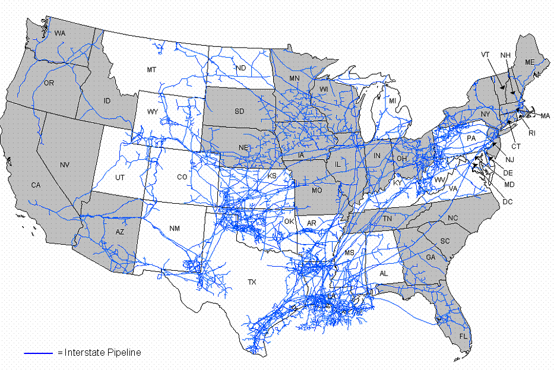

|
States in grey which are at least 85% dependent on the interstate pipeline network for their natural gas supply are:
New England - Connecticut, Maine, Massachusetts, New Hampshire, Rhode Island, Vermont
Southeast - Florida, Georgia, North Carolina, South Carolina, Tennessee
Northeast - Delaware, Maryland, New Jersey, New York, District of Columbia
Midwest - Illinois, Indiana, Minnesota, Ohio, Wisconsin
Central - Iowa, Missouri, Nebraska, South Dakota
West - Arizona, California, Idaho, Nevada, Oregon, Washington
Interstate Natural Gas Supply Dependency, 2007

Note: A state’s relative dependence on the interstate natural gas pipeline network for its supplies was determined by the level of natural consumed within the State in 2007 relative to the amount of natural gas produced within the State. A State with no natural gas production was 100 percent dependent on the interstate natural gas pipeline network for its supplies.
Source: Energy Information Administration, Form EIA176 "Annual Report of Natural Gas and Supplemental Gas Supply and Disposition."
|